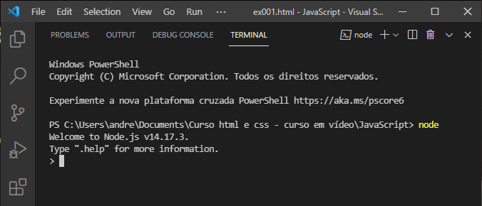
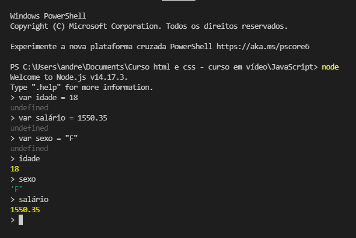

Já me livrei da maldição!!
O script é localizado no final do conteúdo no body, pois ele irá carregar em cima do conteúdo já existente. O conteúdo tem que ser renderizado para ser aplicado depois o script.
Alertas (podemos omitir o window):
window.alert('Minha primeira mensagem!')
window.confirm('Está gostando de JS?')
Imagens de exemplos:
Null é nenhum carro na vaga.
No computador esse terreno chamamos de memória onde podemos colocar dados. Dentre da memória temos espaços delimitados para receber esses valores (assim como as vagas no exemplo) e esses espaços são as variáveis.
Quando a variável recebe um valor chamamos isso de atribuição. "Um operador de atribuição atribui um valor ao operando à sua esquerda baseado no valor do operando à direita. O operador de atribuição básico é o igual (=), que atribui o valor do operando à direita ao operando à esquerda."
Existem também variáveis de tamanhos diferentes para caber dados de tamanhos diferentes (assim como o exemplo as vagas de caminhão ou moto).
Uma cadeia de caracteres são chamadas strings (fragmentos). Strings são úteis para guardar dados que podem ser representados em forma de texto. Usamos esse caracter entre aspas simples ou duplas. No exemplo abaixo as strings são os s1, s2, s3...
Podemos delimitar uma string em javascript de três formas, com: aspas simples (apóstrofo), duplas e a crase. Têm diferença usar uma ou outra. Veremos mais a frente.
O nome de cada variável chamamos de identificador. Existem algumas regras para nomeação de identificadores (não podemos colocar qualquer nome).
Palavras reservadas como: alert, var ...
Dicas para escolher nomes de identificadores:
Podemos criar uma variável no node.js com o var (ou o let) para testar.
A variável é nome e recebe o texto "Andressa". Quando queremos resgatar a variável colocamos o nome dela (nome) e ela nós retorna o valor (Andressa). Podemos mudar esse valor com var nome = "texto".
Podemos usar o node.js dentro do Visual Studio Code. Vamos em Terminal e depois Novo Terminal. Depois digitamos o node.
Lemos variável idade rebece 18 no exemplo.
Podemos sair do node usando .exit e depois do terminal usando .exit de novo ou só clicamos no x (cuidado para não abrir vários terminais, se abrimirmos vários só dá pra fechar com exit cada um).
Tem como somar as variáveis:
Control + L = Limpa a tela
Usamos variáveis para guardar dados de vários tipos diferentes: number (numéros inteiros e números reais - reais são ponto flutuante/ float. No javascript os dois são definidos como number); string (textos ou até mesmo conjunto de números como telefone, cpf, identidade - dentro de aspas); boolean (valores boleanos - só temos dois valores possíveis sendo verdadeiro ou falso).
Esses três são os tipos primitivos primordiais são chamados de Data Types. Porém no javascript há muitos outros tipos primitivos, ou esses valores tem valores internos:
Para eu saber/trabalhar com esse tipos temos um comando do javascript muito valioso: typeof (tipo de).
Podemos fazer isso com um valor literal (literalmente um número):
Dica: seta pra cima ou pra baixo permite voltar no histórico.